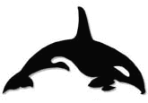

|

 Welcome Welcome
 Kids Kids
Odyssey
Wedding
Genealogy
Travels
Movies
Kayak
Contact Us
|
|
|
|
Last updated 18 March 2001.
|
|
I have enjoyed kayaking around Puget Sound, especially with orcas on the west side of San Juan Island.
For years, I have wanted own a sea kayak. They can get quite pricey. So, I have decided to build my own
sea kayak. This will allow me to save a lot of money as well as to gain a lot of pride. I decided to buy a kit from Pygmy Kayaks of Port Townsend, Washington. I have chosen the Coho, a long, sleek, multi-chine, wooden kayak. I plan to start building it in mid-February and have it completed by this summer.
|
|
The unpacked and yet to be built Coho
|
|
On February 10th, 2001, Scott, Sierra and I traveled over to Port Townsend to take one last test paddle
before deciding which model I will build. This is the Coho kit still in its boxes. I need some time to look over
the construction manual and to prepare the garage for this major project.
I will continue to add photos and logs of my progress. Though, it will be put on the back burner until autumn of 2001 due to a major project due for work at the end of summer and the impending arrival of my twins.
|

|
|
Onward
|
|
It is March 18th and I have finally been able to get started. There was a delay as I cleared space needed in the garage and gathered up the necessary tools. I unpacked the pieces of marine plywood and have laid them out on the floor. The left and right sides of each panel are stacked on top of each other. Next, I will chalk lines on the board on the floor, tack down the marine plywood to the floor, start gluing the boards together, and strengthen the seams with a bit of epoxy and fiberglass. I will end up with twelve long boards. The marine plywood panels are so thin, only 4mm thick. Sierra and Amanda will be the first to test paddle it for me. If it is seaworthy, then my turn. (-:
|
Lisa Merlin lisamerlin@hotmail.com
Richard Grassy rgrassy@hotmail.com

|